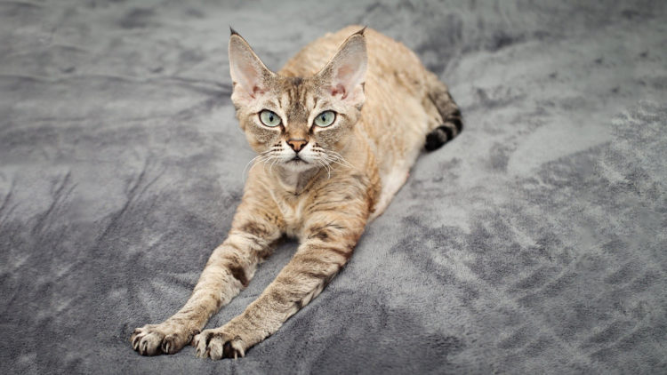

Девон-рекс

Название породы: Девон-рекс
Вес: 1,5-3кг
Происхождение: Великобритания
Продолжительность жизни: 15-17лет
Поведение: Очень игривые и активные
Небольшая информация:
Содержание:
История происхождения породы девон-рекс
.jpg)
Зарождение данной породы произошло в Англии, в результате случайной связи домашней кошки и уличного кота обитавшего близ рудников графства Девоншир.Родившийся котенок по имени Кирли стал родоначальником необычной породы.Селекционеры сразу заинтересовались этим открытием и проводили скрещивания с различными гладкошерстными породами, однако так и не смогли добиться желаемого результата.Ученые поняли, что за волнистую шерсть отвечают гены, которые были отличны от опытных экземпляров, поэтому они стали работать над сохранением этих генов назвав новую породу девон-рекс.В европейских странах новый вид семейства кошачьих стал очень популярен, а вот за океаном питомцам пришлось ждать около 20 лет, чтобы девон-рексов приняли как самостоятельную породу.
Не последнюю роль в популяризации породы сыграла репутация самого графства, в котором были найдены кудрявые мурки. Окутанный призрачным туманом народных легенд и сказаний, Девон обеспечил своих усатых уроженцев полумистической биографией. В итоге к ним прилипло прозвище «эльфы», которое животные получили из-за своей неординарной внешности. При этом до конца 70-х годов и девон-, и корниш-рексы классифицировались как две ветви одной породы и имели общий стандарт внешности. Лишь в 1979 году, под нажимом заводчиков, PCA подарила эльфоподобным котофеям долгожданную «независимость» и право на собственную историю.
Шерсть и окрас
Естественно, окрас кошки весьма разнообразен. Самые популярные цвета шерсти: черный, белый, лиловый, шоколадный, минк, циннамон, серый, поинт. Часто встречаются биколор, табби и черепаховые кошки.
- Лиловый – нежный серый окрас с явным голубовато-розовым оттенком.
- Минк – норковый сиамский (поинтовый) окрас, в котором окрашены морда, уши, конечности и хвост. Также особенность этого окраса – максимум контраста между оттенком окрашенных частей и остального тела.
- Циннамон – красно-коричневый, подшерсток – желто-коричневый, причем красный тон шерсти медный, иногда бронзовый.
Стандартом породы признаются все существующие и вышеперечисленные окрасы.
{kind=link}
{kind=link}
{kind=link}
{kind=link}
{kind=link}
{kind=link}
{kind=link}
{kind=link}
{kind=link}
{kind=link}
{kind=link}